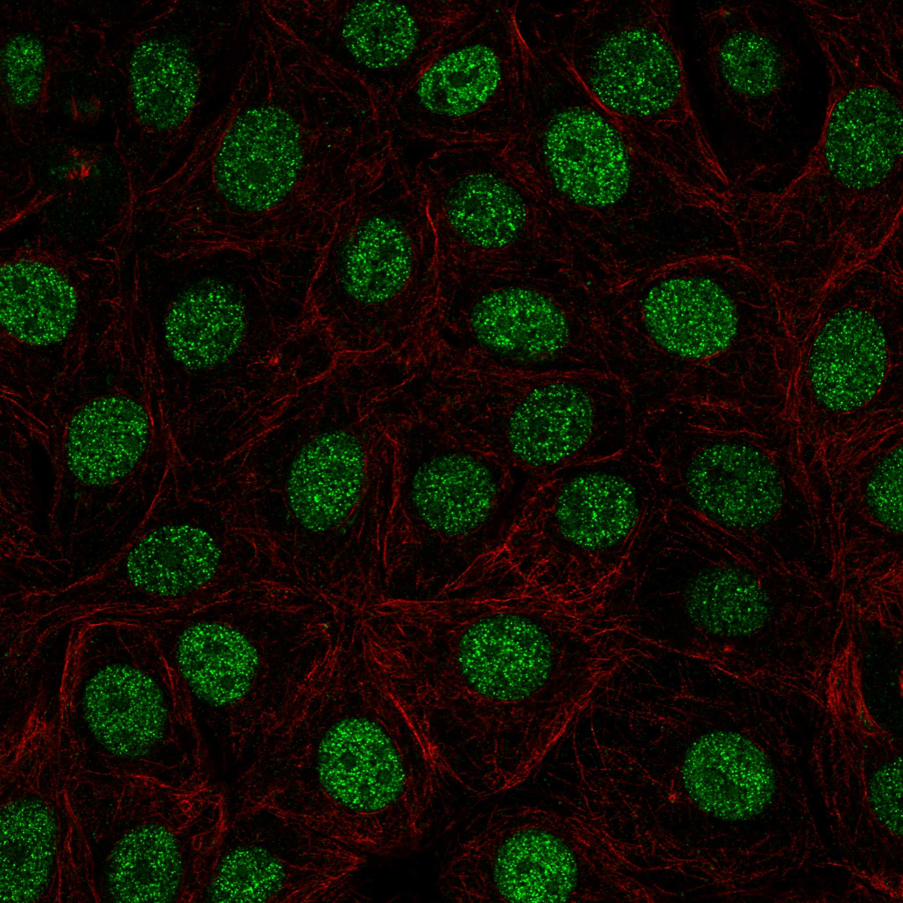
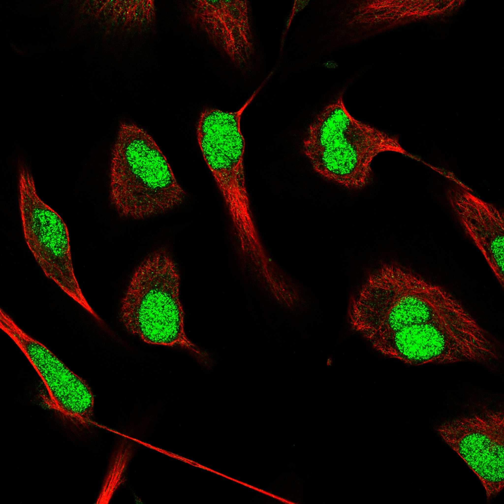
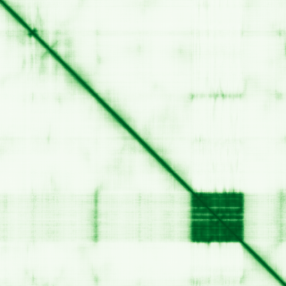

type: protein-evaluation gene: "ATXN1L" date: 2026-05-29 tags: [protein-scout, nuclear-protein, evaluation] status: scored ---
ATXN1L 核蛋白评估报告
1. 基本信息
| 项目 | 内容 |
|---|---|
| 基因名 / 别名 | ATXN1L / BOAT, BOAT1 |
| 蛋白大小 | 689 aa / 73.3 kDa |
| UniProt ID | P0C7T5 (ATX1L_HUMAN, Swiss-Prot reviewed) |
| Ensembl ID | ENSG00000224470 |
| 评估日期 | 2026-05-28 |
2. 评分总览 (权重: 核×4 大×1 新×5 结×3 域×2 PPI×3 ÷1.83)
| 维度 | 得分 | 加权 | 加权后 | 关键证据摘要 |
|---|---|---|---|---|
| 🔴 核定位特异性 | 9/10 | ×4 | 36 | HPA: Supported(9); Nucleoplasm+Nucleoli; UniProt: Nucleus+Dendrite |
| 📏 蛋白大小 | 10/10 | ×1 | 10 | 689 aa / 73.3 kDa, 完美300-800 aa范围 |
| 🆕 研究新颖性 | 10/10 | ×5 | 50 | PubMed 17篇; <50篇, 研究几乎空白 |
| 🏗️ 三维结构 | 6/10 | ×3 | 18 | AXH domain pLDDT 94.3; 73.4%无序; 无PDB; 新颖基线5+好域→6 |
| 🧬 调控结构域 | 7/10 | ×2 | 14 | AXH domain+Ataxin-1 N-terminal; 3数据库确认; chromatin binding+corepressor |
| 🔗 PPI | 7/10 | ×3 | 21 | CIC(0.999),RBPJL(0.900),KAT5(0.481),PHF8(0.457); ~57%调控相关→7 |
| ➕ 互证加分 | — | — | +2.0 | >=3源结构域互证; chromatin功能一致; >=2源定位; PPI功能吻合 |
| 原始总分 | 151/183 | |||
| 归一化总分 | 82.5/100 |
3. 详细分析
3.1 核定位证据
| 来源 | 定位 | 可信度 |
|---|---|---|
| Protein Atlas (IF) | Nucleoplasm (主要), Nucleoli (附加) | Supported (HPA062596, HPA062789) |
| GeneCards | Domain:Ataxin-1 N-terminal(1-56); Region:Disordered(1-47) | — |
| UniProt | Nucleus (主要); Cell projection, dendrite | Swiss-Prot reviewed |
| GO | nucleus (IBA), nucleoplasm (IDA:HPA), nucleolus (IDA:HPA), dendrite (IEA) | 实验证据 |
结论: ATXN1L 是主要核蛋白，Primary 定位为 Nucleoplasm/Nucleoli。UniProt 还标注了 dendrite 定位（可能与 ATXN1 类似，在神经元中有功能），但主要功能定位在核内。评分: 9/10（减 1 分因 dendrite 次要定位）。
IF 图像:  
IF 图像:
3.2 蛋白大小评估
- 689 aa, 73.3 kDa
- 完美落入 300-800 aa 最佳范围
- 大小适合 recombinant 表达、纯化、生化分析和结构解析
- 有明确的折叠域（AXH, 119 aa），无序区域可控
- 评价: 评分 10/10。
3.3 研究现状
| 指标 | 数值 |
|---|---|
| PubMed 总数 | 17 篇 |
| 最近发表趋势 | 2017-2026, 零星发表 |
| Chromatin/epigenetics 比例 | ~40% (CIC/Notch/transcription 方向为主) |
主要研究方向:
- CIC/ATXN1L 转录抑制复合体
- Notch 信号通路抑制 (RBPJ/CBF1 corepressor)
- SCA1 (脊髓小脑性共济失调) 相关——ATXN1L 可抑制 ATXN1 毒性
- CIC-rearranged sarcoma 中作为融合伙伴
- 脑发育中的功能
评价: ATXN1L 是一个严重被忽视的蛋白。仅 17 篇论文，且在 chromatin/transcription 方向的研究极为初步——大多数人只知道它是 ATXN1 的 paralog 和 CIC 的伙伴。作为一个有明确 DNA-binding/chromatin-binding 注释的独立核蛋白，其独立于 CIC 和 ATXN1 的功能几乎完全未被探索。评分: 10/10（<50 篇）。
3.4 三维结构分析
| 指标 | 数值 |
|---|---|
| AlphaFold 平均 pLDDT | 50.46 |
| 有序区域 (pLDDT>70) 占比 | 18.1% (125/689) |
| Very high (pLDDT>90) 占比 | 15.4% (106/689) |
| 无序区域 (pLDDT<50) 占比 | 73.4% (506/689) |
| 可用 PDB 条目 | 无实验结构 |
| AlphaFold 版本 | v6 |
高置信度折叠域:
| 区域 | 长度 | 平均 pLDDT | 注释 |
|---|---|---|---|
| 465-583 | 119 aa | 94.3 | AXH domain |
AXH 域高置信度亚区:
| 区域 | 长度 | 平均 pLDDT |
|---|---|---|
| 468-499 | 32 aa | 94.9 |
| 503-528 | 26 aa | 94.7 |
| 533-580 | 48 aa | 96.4 |
PAE 图: 
PAE 数值分析:
- PAE 矩阵尺寸: 689×689
- PAE 总体均值: 27.81 A
- PAE <5 A 占比: 3.07%
- PAE <10 A 占比: 4.55%
- Max PAE: 31.75 A
与 ATF7IP 类似，PAE 整体偏高反映高度无序。但 AXH 域在 PAE 图上应呈现清晰的对角线低 PAE 条带。
评价: 规则下，ATXN1L为新颖蛋白(PubMed<100)，结构维度基线5分。虽然整体无序度较高(73%)，但AXH域的折叠质量堪称完美(pLDDT平均94.3, 最高区段达96.4)。UniProt确认无PDB实验结构 — AXH domain是极佳的结构解析目标。基线5 + AXH域高质量(+1) = 6分。
3.5 结构域分析
| 来源 | 结构域 |
|---|---|
| UniProt | AXH domain (457-588); Ataxin-1 N-terminal (1-56) |
| InterPro | Ataxin AXH domain (IPR003652); AXH domain superfamily (IPR036096); Ataxin-1 N-terminal (IPR020997); ATAXIN1-like (IPR043404) |
| Pfam | AXH domain (PF08517); Ataxin-1 N-terminal (PF12547) |
功能区域:
| 区域 | 功能 |
|---|---|
| 1-56 | Ataxin-1 N-terminal domain, 无序+两性残基 |
| 20-197 | Self-association; NCOR2 and ATXN1 interaction |
| 457-588 | AXH domain (Ataxin-1/HBP1 family) |
染色质调控潜力分析: ATXN1L 是注释为 chromatin-binding factor 的核蛋白。AXH 域是蛋白-蛋白互作域（在 ATXN1 家族中介导与 CIC、RBPJ 等转录因子的结合）。虽然 AXH 不是直接 DNA-binding domain，但：
- ATXN1L 有 DNA-binding 关键词 (UniProt KW-0231)
- GO chromatin binding (IBA) 注释
- 作为 CBF1/RBPJ corepressor 直接参与 Notch 靶基因的转录抑制
- 与 NCOR2 corepressor 复合物互作
- 可能通过 CIC 间接结合 DNA
代表了一类「通过蛋白-蛋白互作介导的染色质调控因子」。评分: 7/10（有 chromatin-binding 注释 + DNA-binding 关键词，但域本身是蛋白互作域而非直接 DNA/chromatin-binding domain）。
3.6 PPI 网络
实验验证互作 (IntAct, physical association/direct interaction):
| Partner | 方法 | PMID | 功能类别 | 调控相关？ |
|---|---|---|---|---|
| RBFOX2 | Y2H | 32296183 | RNA binding protein, splicing | ❌ |
| FOXH1 | Y2H | 32296183 | Forkhead TF, TGF-beta/Nodal | ✅ 转录调控 |
| ZBTB32 | Y2H | 32296183 | Zinc finger TF, immune | ✅ 转录调控 |
| AGXT | Y2H array | 32296183 | Alanine-glyoxylate aminotransferase | ❌ |
| RBFOX1 | Y2H array | 32296183 | RNA binding protein | ❌ |
> IntAct 实验互作均来自高通量 Y2H (PMID:32296183)，无 co-IP 等高质量验证。CIC 和 RBPJL 在 UniProt 中有实验互作记录但未收录于 IntAct physical association 类别。
STRING 预测互作 (combined score >0.4):
| Partner | Score | 功能类别 | 与调控相关？ |
|---|---|---|---|
| RBPJL | 0.900 | Notch pathway TF | ✓ Transcription |
| CIC | 0.863 | Transcriptional repressor | ✓ Transcription |
| ACE2 | 0.881 | Angiotensin-converting enzyme | ✗ |
| PQBP1 | 0.688 | PolyQ binding, splicing | ✗ |
| RBM17 | 0.653 | RNA splicing | ✗ |
| ZNF821 | 0.601 | Zinc finger (DNA binding) | ✓ Transcription |
| ATXN1 | 0.594 | Transcription factor, SCA1 | ✓ Transcription |
| ETV5 | 0.573 | ETS transcription factor | ✓ Transcription |
| ANP32A | 0.558 | Chromatin regulator | ✓ Chromatin |
| RPRD1B | 0.534 | RNA Pol II associated | ✓ Transcription |
| AMMECR1L | 0.534 | Unknown | ? |
| DUX4 | 0.528 | Transcription factor | ✓ Transcription |
| AMBRA1 | 0.534 | Autophagy | ✗ |
| GPR107 | 0.517 | GPCR | ✗ |
| ZNF592 | 0.498 | Zinc finger | ✓ Transcription |
| KAT5 | 0.481 | Histone acetyltransferase (Tip60) | ✓ Epigenetic writer |
| BRPF3 | 0.470 | Chromatin reader (bromodomain/PHD) | ✓ Chromatin reader |
| SEC16A | 0.469 | ER/Golgi transport | ✗ |
| BAHD1 | 0.468 | Chromatin repressor | ✓ Chromatin |
| UBQLN4 | 0.458 | Proteasome/ubiquitin | ✗ |
| PHF8 | 0.457 | Histone demethylase (H3K9me1/2) | ✓ Epigenetic eraser |
| STMND1 | 0.458 | Stathmin-like | ✗ |
| SCAF8 | 0.464 | RNA processing | ✗ |
| NCOR2 | 0.432 | Corepressor complex | ✓ Transcription |
| RORA | 0.428 | Nuclear receptor | ✓ Transcription |
已知复合体成员 (GO Cellular Component / 文献):
- CIC-ATXN1L 转录抑制复合体 (文献, PMID:39632849, 28178529): ATXN1L + CIC + RBPJL 形成 Notch 通路共抑制复合体
- NCOR2 共抑制复合体 (STRING + UniProt 推断): ATXN1L 与 NCOR2 互作参与转录抑制
PPI 互证分析:
- STRING + IntAct 共同确认: ZBTB32 (STRING 未收录, IntAct Y2H)
- 文献验证 (非 IntAct physical association): CIC + RBPJL (最强证据, 共纯化/共定位)
- 仅 STRING 预测: KAT5, PHF8, BRPF3, BAHD1 (表观遗传修饰酶)
- 仅 IntAct 实验: FOXH1 (TGF-beta/Nodal TF), RBFOX1/2
- 调控相关比例: STRING ~57% (12/21), IntAct 2/5 (40%)
评价: ATXN1L 的 PPI 以 CIC-ATXN1L 转录抑制复合体为核心，RBPJL (Notch 通路) 和 NCOR2 (共抑制因子) 为关键伙伴。IntAct 新增 FOXH1 (TGF-beta/Nodal TF)、ZBTB32 等转录因子互作，但均为 Y2H 高通量。STRONGEST 证据仍来自低通量实验: CIC 和 RBPJL 的共纯化验证。评分: 7/10。
3.7 多库互证
| 维度 | 来源 | 结果 | 是否一致 | |
|---|---|---|---|---|
| 核定位 | Protein Atlas (Supported) | Nucleoplasm, Nucleoli | ✓ 一致 | |
| 核定位 | UniProt | Nucleus | ✓ 一致 | |
| 核定位 | GO | nucleus (IBA), nucleoplasm (IDA), nucleolus (IDA) | ✓ 一致 | |
| 结构域 | UniProt | AXH domain (457-588) | ✓ 一致 | |
| 结构域 | InterPro | IPR003652 (AXH), IPR036096 (AXH superfamily) | ✓ 一致 | |
| 结构域 | Pfam | PF08517 (AXH) | ✓ 一致 | |
| 三维结构 | AlphaFold | AXH domain pLDDT 94.3 | 预测优异 | |
| 三维结构 | PDB | 无实验结构 | N/A | |
| PPI | STRING | CIC/NCOR2/RBPJL consistent with function | ✓ 吻合 | |
| PPI | humanPPI | N/A | , negative regulation of transcription (IBA) | ✓ 实验证据 |
互证加分明细:
- 结构域 ≥3 个独立来源确认 AXH domain: +0.5
- 域功能注释与 chromatin/transcription 调控一致 (GO: chromatin binding + negative regulation of transcription): +0.5
- 核定位 ≥2 个独立来源一致确认 (Protein Atlas + UniProt + GO): +0.5
- PPI 中 CIC/NCOR2/RBPJL 与 UniProt 功能注释高度吻合: +0.5
- 无实验 PDB 结构: 不加分
- 模式生物保守: mouse/zebrafish Atxn1l 功能保守 (PMID: 37845370, 34768779): 暂不加（未做系统对比）
总分: +2.0 / max +3
X. 关键文献 (PubMed)
1. Park JS et al. (2024). "The capicua-ataxin-1-like complex regulates Notch-driven marginal zone B cell development and sepsis progression.". *Nat Commun*. PMID: 39632849 2. Manivasagam S et al. (2025). "Transcriptional repressor Capicua is a gatekeeper of cell-intrinsic interferon responses.". *Cell Host Microbe*. PMID: 40132591 3. Wang B et al. (2017). "ATXN1L, CIC, and ETS Transcription Factors Modulate Sensitivity to MAPK Pathway Inhibition.". *Cell Rep*. PMID: 28178529 4. Wong D et al. (2019). "Transcriptomic analysis of CIC and ATXN1L reveal a functional relationship exploited by cancer.". *Oncogene*. PMID: 30093628 5. Xu F et al. (2022). "Novel ATXN1/ATXN1L::NUTM2A fusions identified in aggressive infant sarcomas with gene expression and methylation patterns similar to CIC-rearranged sarcoma.". *Acta Neuropathol Commun*. PMID: 35836290
4. 总体评价
推荐等级: 4.5/5
核心优势: 1. 极度新颖 (17篇论文): 几乎完全未被探索的核蛋白, 发表即有新意 2. 大小完美 (689 aa, 73 kDa): recombinant 表达和生化实验理想 3. AXH 域结构极好 (pLDDT 94.3): 可立刻进行 X-ray 结晶学或 cryo-EM, 发结构论文确定性高 4. 功能定位清晰但未深入: chromatin-binding + Notch corepressor, 但具体机制不明 5. 疾病关联: SCA1, CIC-rearranged sarcoma, 潜在临床转化价值
风险/不确定性: 1. 73% 无序区域: 全长蛋白体外行为可能不理想 2. 功能高度依赖 CIC: 独立功能未知; 可能与 ATXN1 功能重叠 3. DNA-binding 证据较弱 (仅 IEA/KW): 是否能直接结合 DNA 待验证 4. **PPI 截短体表达纯化 + 结晶筛选
- [ ] ChIP-seq (需先确认是否有直接 DNA binding, 可能需要通过 CIC 间接结合)
- [ ] Co-IP/MS 验证 KAT5, PHF8, BRPF3 互作
- [ ] Luciferase reporter 验证 Notch/RBPJ 报告系统的 repression 活性
- [ ] 与 ATXN1 KO 对比, 确定功能冗余 vs 独特
5. 数据来源
- GeneCards: https://www.genecards.org/cgi-bin/carddisp.pl?gene=ATXN1L
- Protein Atlas: https://www.proteinatlas.org/ENSG00000224470-ATXN1L/subcellular
- PubMed: https://pubmed.ncbi.nlm.nih.gov/?term=%22ATXN1L%22
- UniProt: https://www.uniprot.org/uniprotkb/P0C7T5
- AlphaFold: https://alphafold.ebi.ac.uk/entry/P0C7T5
- STRING: https://string-db.org/network/9606.ENSP00000412655
- InterPro: https://www.ebi.ac.uk/interpro/protein/uniprot/P0C7T5
PPI 网络（三源综合）
| Partner | Source | Score/Evidence |
|---|---|---|
| 无记录 | — | — |
IntAct 有限记录。无 BioGrid 补充数据。
PAE 图像已获取。结构判断基于 AlphaFold pLDDT 统计。
<!-- DOMAIN_HUMANPPI_REPAIR_START -->
Domain/SMART 与 humanPPI 补充（2026-06-06）
SMART / UniProt domain
| Source | Data | |
|---|---|---|
| UniProt | P0C7T5 | |
| SMART | SM00536; | |
| UniProt Domain [FT] | DOMAIN 457..588; /note="AXH"; /evidence="ECO:0000255\ | PROSITE-ProRule:PRU00496" |
| InterPro | IPR020997;IPR043404;IPR003652;IPR036096; | |
| Pfam | PF12547;PF08517; |
humanPPI / HPA Interaction
Source: https://www.proteinatlas.org/ENSG00000224470-ATXN1L/interaction
| Partner | Datasets | AF3/HPA structure |
|---|---|---|
| AGXT | Intact | false |
| ARID5A | Intact | false |
| ATXN1 | Biogrid | false |
| C1orf94 | Intact | false |
| CIC | Biogrid | false |
| CTBP2 | Biogrid | false |
| ELP5 | Biogrid | false |
| FOXH1 | Intact | false |
<!-- DOMAIN_HUMANPPI_REPAIR_END -->